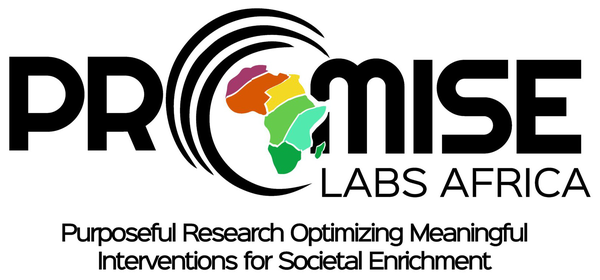

About
The Demand Curve Analyzer is a free, browser-based tool for analyzing hypothetical purchase task (HPT) data. Upload wide-format survey responses, and it aggregates demand at each price and fits exponentiated demand curves — overall and by group — with publication-ready parameters, tables, and figures. See Methods for the full analytic details.
About PROMISE Labs Africa

The Demand Curve Analyzer is a project of PROMISE Labs Africa, a 501(c)(3) scientific nonprofit dedicated to cutting-edge translational behavioral research in Africa — rapidly testing innovative interventions in simulated environments to understand, predict, and influence real-world behaviors.